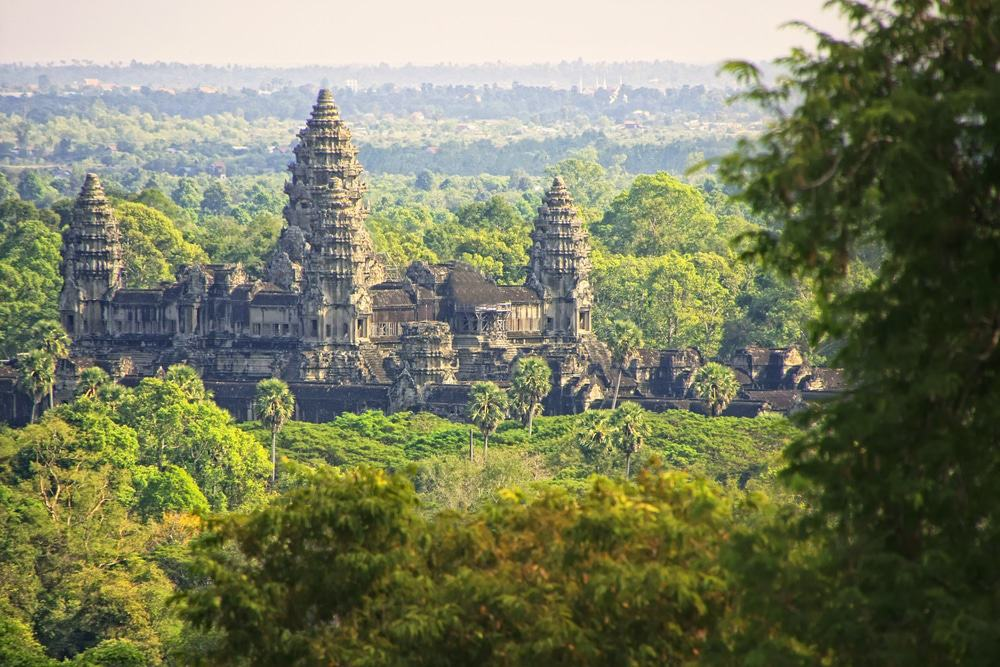
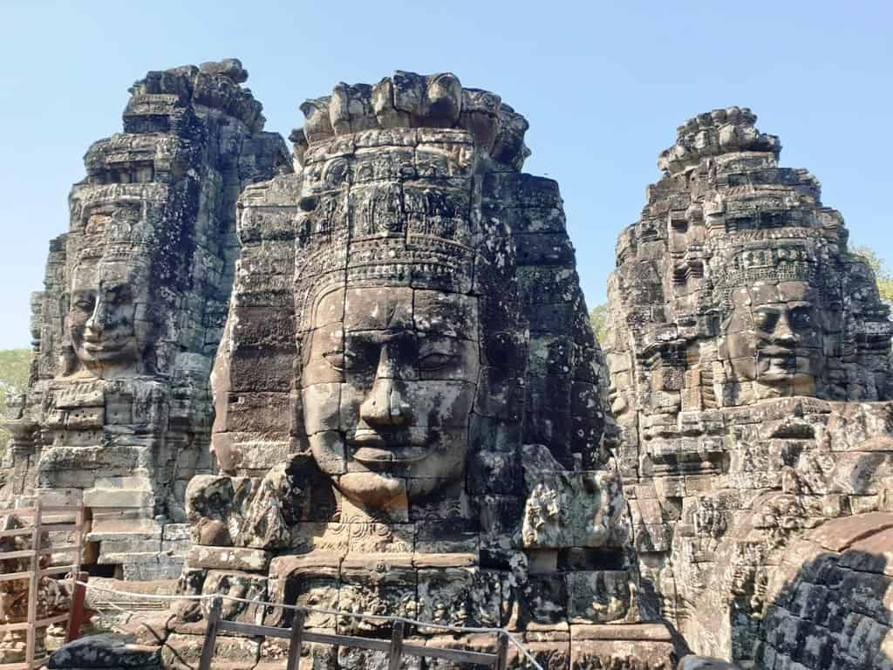
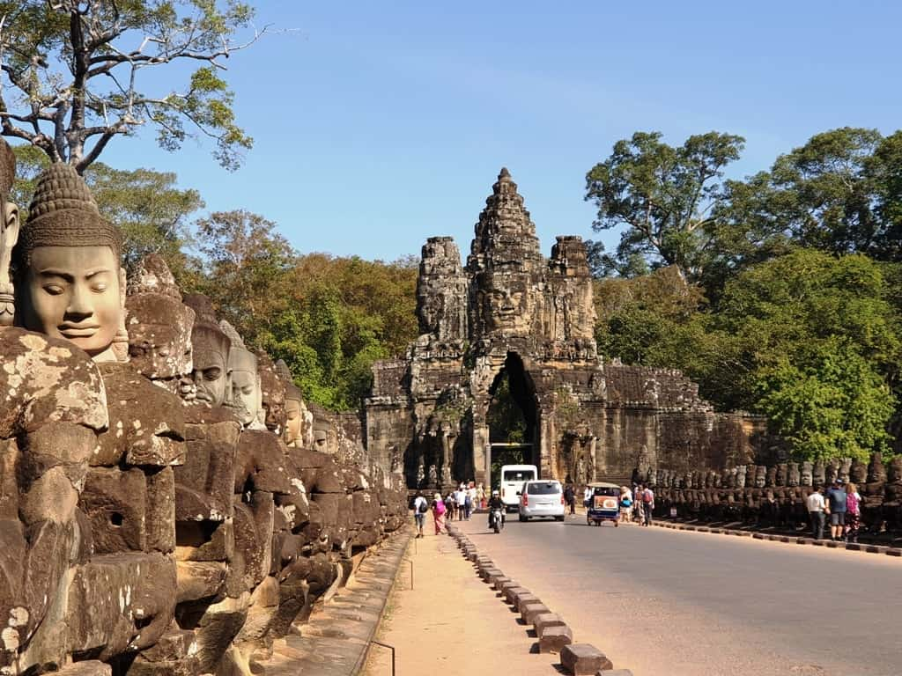
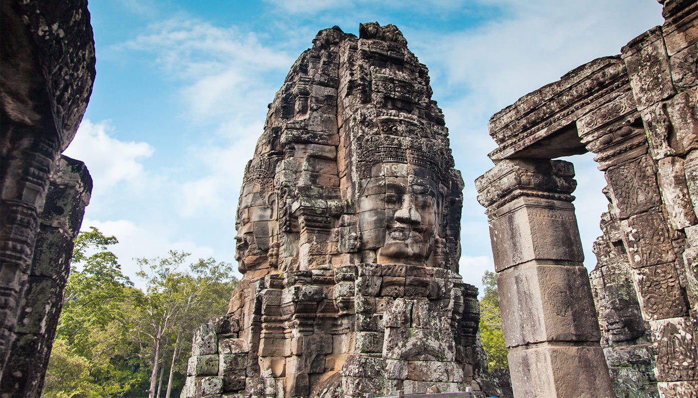

Angkor Wat is a temple complex in Cambodia and is the largest religious monument in the world, on a site measuring 162.6 hectares. Originally constructed as a Hindu temple dedicated to the god Vishnu for the Khmer Empire by King Suryavarman II, it was gradually transformed into a Buddhist temple towards the end of the 12th century; as such, it is also described as a "Hindu-Buddhist" temple. Angkor Wat was built at the behest of the Khmer King Suryavarman II in the early 12th century in Yaśodharapura, the capital of the Khmer Empire, as his state temple and eventual mausoleum. Angkor Wat combines two basic plans of Khmer temple architecture: the temple-mountain and the later galleried temple. It is designed to represent Mount Meru, home of the devas in Hindu mythology: within a moat more than 5 kilometres long and an outer wall 3.6 kilometres long are three rectangular galleries, each raised above the next. At the centre of the temple stands a quincunx of towers. Unlike most Angkorian temples, Angkor Wat is oriented to the west; scholars are divided as to the significance of this The name "Siem Reap" can be translated to mean 'defeat of Siam' (siem in Khmer), and is commonly taken as a reference to an incident in the centuries-old conflict between the Siamese and Khmer kingdoms, although this is probably apocryphal. According to oral tradition, King Ang Chan (1516–1566) had named the town "Siem Reap" after he repulsed an army sent to invade Cambodia by the Thai king Maha Chakkraphat in 1549.[4] Scholars such as Michael Vickery consider this derivation to be simply a modern folk etymology, and maintain that while the names Siem Reap and Chenla, the old Chinese name for Cambodia, may perhaps be related, the actual origin of the name is unknown.[5]The traditional tale claims that King Ang Chan of Cambodia tried to assert greater independence from Siam, which was then struggling internally. The Siamese king Chairacha had been poisoned by his concubine, Lady Sri Sudachan, who had committed adultery with a commoner, Worawongsathirat, while the king was away leading a campaign against the Kingdom of Lan Na. Sudachan then placed her lover on the throne. The Thai nobility lured them outside the city on a royal procession by barge to inspect a newly discovered white elephant. After killing the usurper, along with Sudachan and their new-born daughter, they invited Prince Thianracha to leave the monkhood and assume the throne as King Maha Chakkraphat (1548–1569). With the Thais distracted by internal problems, King Ang Chan attacked. He seized the Siamese city of Prachinburi in 1549, sacking the city and making slaves of its inhabitants. Only then did he learn that the succession had been settled and that Maha Chakkraphat was the new ruler. Ang Chan immediately retreated to Cambodia, taking captives with him. King Maha Chakkraphat was furious over the unprovoked attack, but Burma had also chosen to invade through Three Pagodas Pass. The Burmese army posed a much more serious threat, as it captured Kanchanaburi and Suphanburi. It then appeared before Ayutthaya itself. The Thai army managed to defeat the Burmese, who quickly retreated through the pass. Maha Chakkraphat's thoughts then turned to Cambodia. Not only had Ang Chan attacked and looted Prachinburi, turning its people into slaves, but he also refused to give Maha Chakkraphat a white elephant he had requested, rejecting even this token of submission to Siam.[6] Maha Chakkraphat ordered Prince Ong, the governor of Sawankhalok, to lead an expedition to punish Ang Chan and recover the Thai captives. The rival armies met, and Ang Chan killed Prince Ong with a lucky musket shot from an elephant's back. The leaderless Thai army fled, and Ang Chan allegedly captured more than 10,000 Siamese soldiers. To celebrate his great victory, King Ang Chan supposedly named the battleground "Siem Reap", meaning 'the total defeat of Siam'. Pub Street, Siem Reap In reality, surviving historic sources make this derivation appear unlikely, since they date the decline of Angkor to more than a century before this, when a military expedition from Ayutthaya captured and sacked Angkor Wat, which began a long period of vassal rule over Cambodia.[7] The 1431 capture coincided with the decline of Angkor, though the reasons behind its abandonment are not clear. They may have included environmental changes and failings of the Khmer infrastructure.[8] From the 16th to the 19th centuries, infighting among the Khmer nobility led to periodic intervention and domination by both of Cambodia's more powerful neighbors, Vietnam and Siam. Siem Reap, along with Battambang (Phra Tabong) and Sisophon, major cities in northwest Cambodia, was under Siamese administration and the provinces were collectively known as Inner Cambodia from 1795 until 1907, when they were ceded to French Indochina. During the 18th century, under the rule of the Ayutthaya Kingdom, it was known as Nakhon Siam ('Siam's city').[9]
When the morning light washes over the overgrown temples and ruins of Angkor Wat, a simple Siem Reap sunrise becomes a profound event. The ancient structures are contained within one of the largest religious complexes in the world. The complex and the 12th century Angkor Thom royal city are considered the main reasons to visit Siem Reap. Get a lesson in national history at the Cambodian Cultural Village, and a lesson in bargaining at the Angkor Night Market, a bonanza of shopping stalls, food vendors, and bars.
Angkor Wat is one of the most impressive archaeological sites on Earth, with an array of temples and monuments scattered around what would have once been the largest pre-industrial city in the world. These buildings have remained intact (albeit in various states of disrepair) for over a millennium and travelers can now explore the temples and buildings to get a glimpse of what life would have been like for the Khmer civilization during this time. While you could easily spend a week exploring the temples of Angkor in-depth, a two-day itinerary allows you to see some of the highlights of the Angkor complex while also enjoying the vibrant town of Siem Reap during the evenings. Read on to discover my top tips for exploring Siem Reap and Angkor Wat in two days, having just been lucky enough to discover it myself!
The best time to visit Cambodia is in the dry season which falls between October and April. While you can visit during the rainy season, you’ll probably incur some downpours, especially if you travel during August and September – the wettest two months of the year. Exploring Siem Reap and Angkor Wat is generally best between October and December when daily average temperatures sit around the mid-20s. This is warm enough to feel comfortable in lightweight trousers and t-shirts without being so hot that you don’t want to continue discovering the different temples around the site. Temperatures tend to rise in the lead up to the rainy season, with March-June reaching highs of mid-to-late 30s! This is great if you’re a sun-worshiper but it’s not ideal for spending a whole day walking around the temple complex.
The Angkor Wat complex, as it is now known, refers to an area of around 1000 square miles north of Siem Reap which comprises of around 100 temple and monument ruins. Built in the 12th century by Khmer King Suryavarman II, as a Hindu temple, the Angkor complex was the heart of the Khmer Empire which, at the time, spanned Cambodia, Vietnam and into China. These buildings held much religious, historical and architectural significance and still teach us today about the Khmer civilization and their way of life. After the king’s death, Angkor Wat was taken over by Khmer enemies Cham and King Jayavarman who abandoned the building, moving their capital to alternative temples Angkor Thom/Bayon instead.

During the latter half of the 12th Century, Angkor Wat gradually became a base for Buddhism instead of Hinduism and is still used as a place of worship today. While Angkor Wat was left in disrepair at various points throughout history, it seems there has always been some level of use whether by Japanese Buddhist pilgrims or simply Khmer locals. French naturalist and explorer, Henri Mouhot, was the first Western visitor to ‘rediscover’ the temples in the mid-19th Century, writing travel notes to describe the complex which popularised the site in the West. Since then, Angkor Wat has seen considerable restoration to remove jungle growth and expose the majestic temples in all their glory once more.
During the latter half of the 12th Century, Angkor Wat gradually became a base for Buddhism instead of Hinduism and is still used as a place of worship today. While Angkor Wat was left in disrepair at various points throughout history, it seems there has always been some level of use whether by Japanese Buddhist pilgrims or simply Khmer locals. French naturalist and explorer, Henri Mouhot, was the first Western visitor to ‘rediscover’ the temples in the mid-19th Century, writing travel notes to describe the complex which popularised the site in the West. Since then, Angkor Wat has seen considerable restoration to remove jungle growth and expose the majestic temples in all their glory once more.
The best way to explore Angkor Wat is to have a guide or tuk-tuk driver take you around the site. Today will be a long day and as the site is so vast it can take quite some time to reach each of the different temples. Instead of walking in the Cambodian heat, strike a deal with a driver who will charge you a fixed price for the whole day
On your first morning in Siem Reap you’ll want to get up early to see the beauty of Angkor Wat in the golden hours of sunrise. In general, the ticket office for Angkor Wat opens at 4.30 am so that you can purchase your tickets and find a good spot near the temple before the sun comes up. I wouldn’t suggest actually entering Angkor Wat at this time as it will be extremely busy with the sunrise crowds, so simply watch from afar and let your excitement for your Angkor exploration mount!

From Angkor Wat, you’ll want to move on to Bayon Temple, one of the real highlights of the complex! Bayon was the state temple built by King Jayavarman and features 216 smiling face carvings of Avalokiteshvara built into the sides of the 54 towers of the structure. Not only are the large faces here impressive but the rest of the temple is adorned with exquisite bas-reliefs which feature more than 11,000 figures carved with care.

Next on your list for the Angkor Complex is Ta Prohm, the temple known for being the home of Lara Croft/Tomb Raider. This mysterious temple sees vast tree roots wind their way around the building, engulfing the roof and some of the windows with their snaking stems. It’s fascinating to see the living relationship between nature and man-made architecture In between roots, roofs and windows lie intricate designs and statues that are longing to be explored. Thanks to its Hollywood fame, Ta Prohm is one of the busiest temples on the site but it is well worth a visit nonetheless.

Another grand temple to be seen today is Prasat Kravan, a temple that comprises of five brick towers which were dedicated to Vishnu. This temple has been well preserved and the symmetry of the building, as well as its surrounding moat, make for a spectacular photo opportunity. Prasat Kravan Temple is usually fairly quiet by the middle of the day as many people choose to visit it first or last when entering or leaving the park.

Neak Pean is more like a monument than an actual temple as it stands on an artificial island in the center of the Jayatataka baray. Neak Pean, or “the entwined snakes” as it’s sometimes called, is thought to be a Buddhist temple that was constructed in the latter half of the 12th Century. As Neak Pean is thought to symbolize the mythical healing lake Anavatapta, many believe that it was built for medical purposes with the waters surrounding thought to cure diseases.
Your last stop for the day at Angkor Wat will be Phnom Bakheng Temple, one of the oldest temples on the site. This is a stunning place to watch the sunset as you are raised above the rest of the Angkor Archaeological Park on a 60m hillside. Phnom Bakheng is set over seven levels, representing the seven Hindu heavens, and as such boasts plenty of different locations from which to watch the sunset. Ideally, you’ll aim to arrive around 4 pm to get a good spot on the south-east corner so that you can capture some incredible golden hour photographs.

By the time you’ve got back to the center of Siem Reap you’ll be ready to explore the night market in search of some street food snacks and drinks while doing a spot of souvenir shopping. The night market sells a whole host of different goods, from clothes and fabrics to handicrafts, ceramics, and handbags. You can spend as long as you like shopping, snacking and bartering for good prices; soaking up the vibrant atmosphere while you go.

When you’re finally ready to wilt, you’ll want to head over to Pub Street for some dinner. This road is basically a strip of restaurants and bars all offering a range of Asian and Western food. You can’t miss it as it’s flanked by neon ‘Pub Street’ signs and it will be abuzz with people seeking out tasty meals and drinks before dancing the night away in some of the more lively bars!